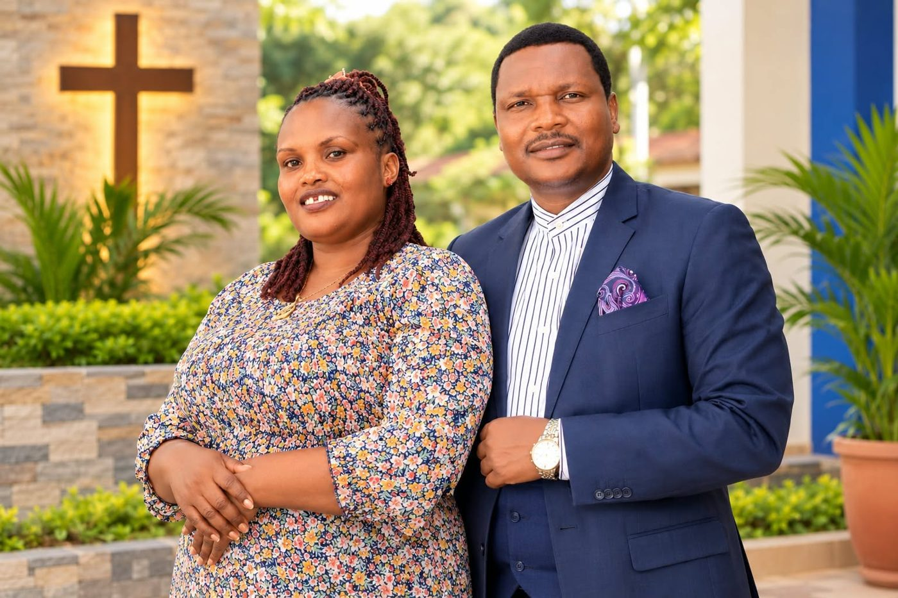
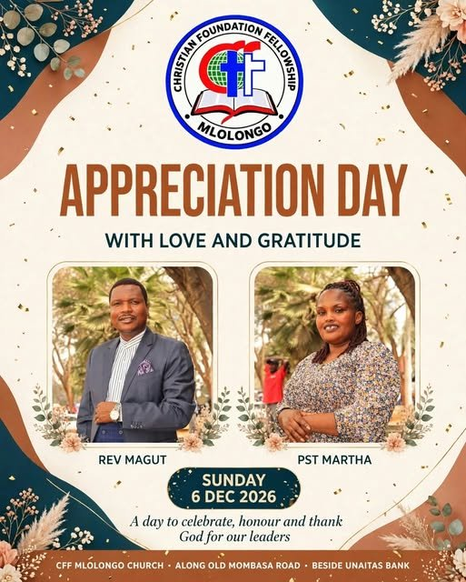
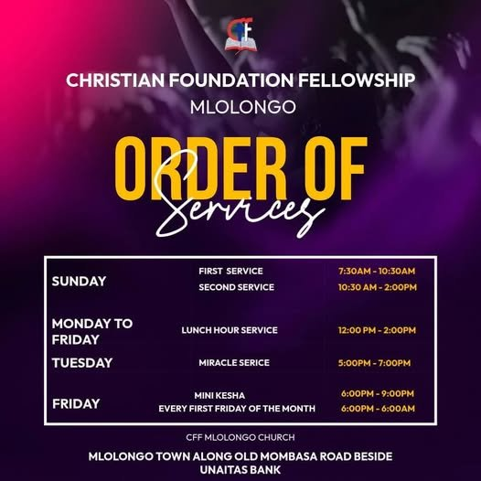
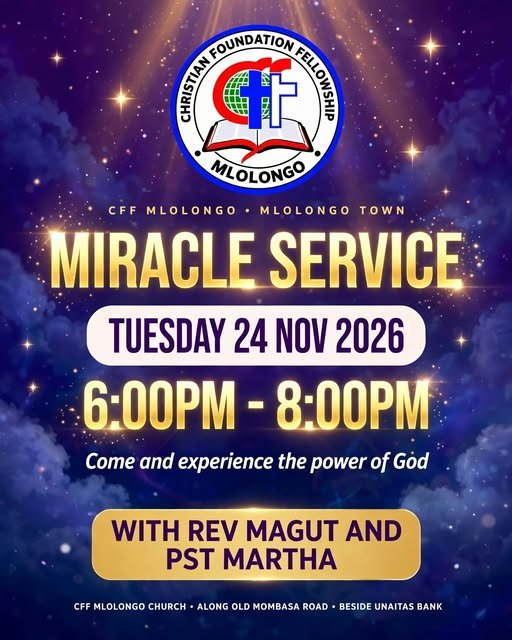
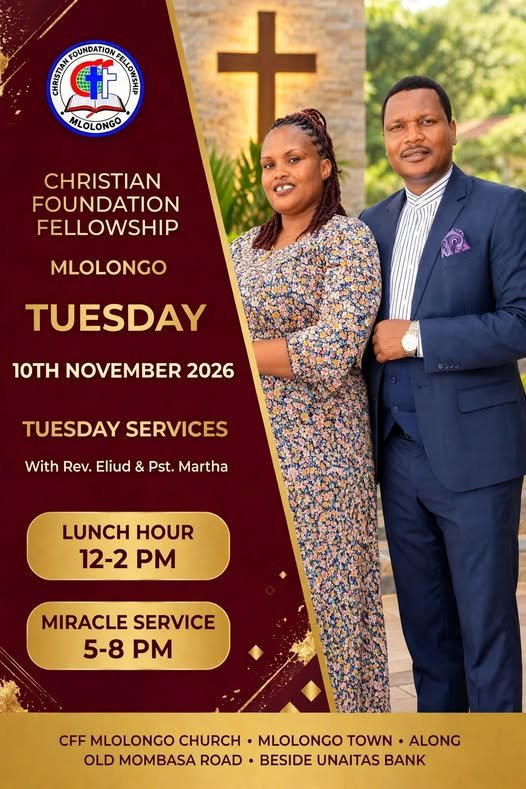
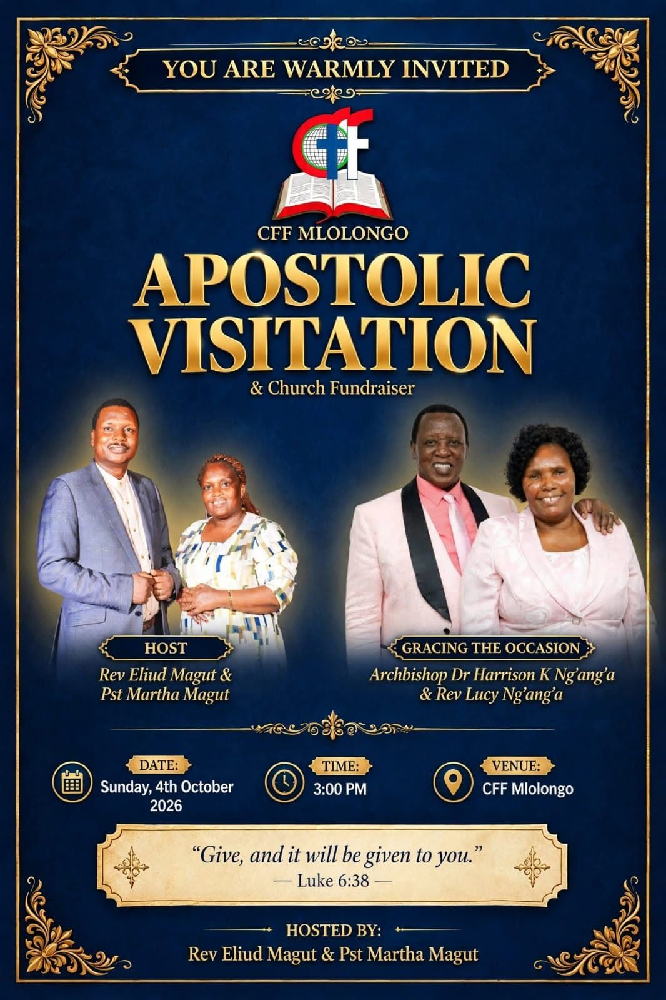
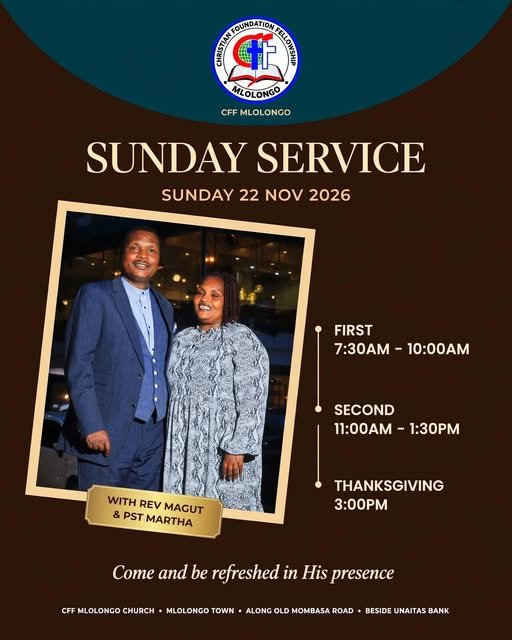
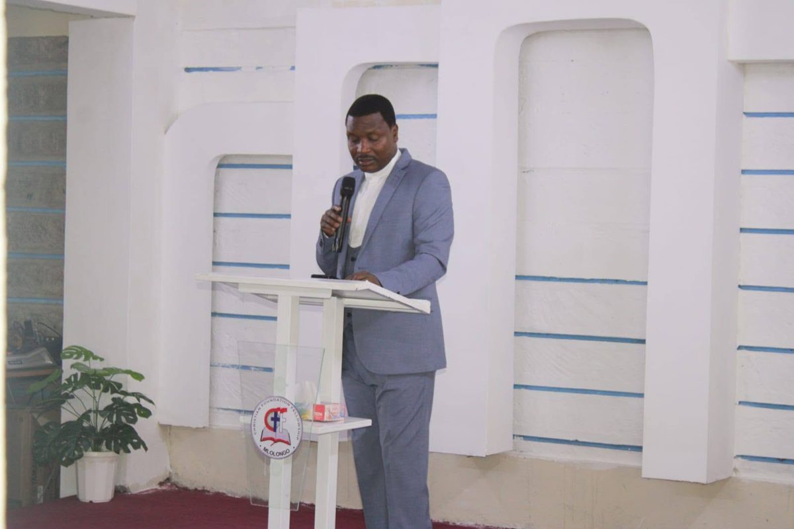
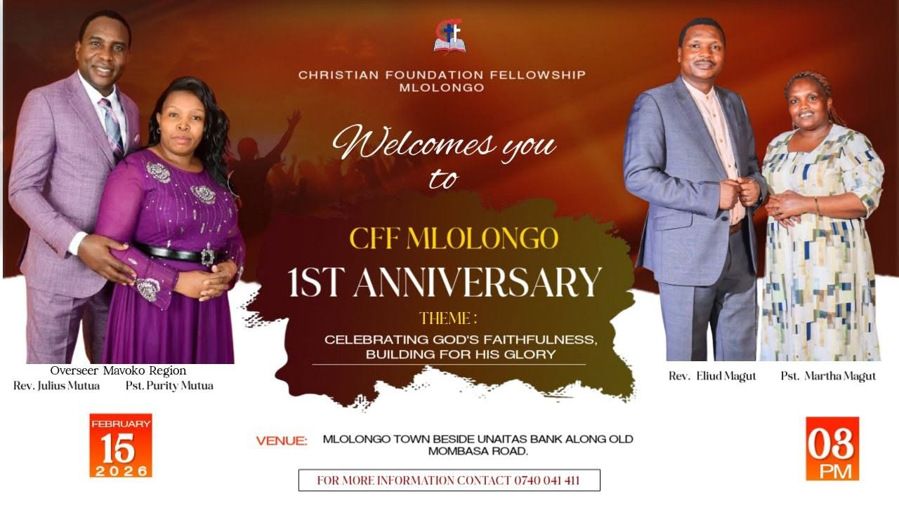

Our leaders

Rev. Eliud Magut
Senior Pastor
Leads CFF Mlolongo with a clear teaching of God’s Word and a call to surrender fully to Him.

Pastor Martha Magut
Pastor
Serves alongside Rev. Eliud, caring for families and nurturing a praying church.
A family built on a firm foundation. Come as you are, meet with God, and grow with us under the leadership of Rev. Eliud Magut and Pastor Martha Magut.
Every Sunday, prompt. Mlolongo Town, beside Unaitas Bank & 306.

Christian Foundation Fellowship Mlolongo is a growing church family on Old Mombasa Road. We gather to worship, to hear God’s Word and to pray for one another, in English and in Swahili.
Whether you are visiting for the first time or looking for a church home, there is a place for you. Our doors are open every Sunday and through the week.
Come and meet with God. Every service starts on time.

Sunday, 6 December 2026
A day to celebrate, honour and thank God for our leaders, Rev. Eliud Magut and Pastor Martha Magut. Come with love and gratitude.

Our services at a glance for the week. Tap the flyer to enlarge it.

Every Tuesday · 6PM to 8PM
Every Friday · 6PM to 9PM
Monday to Friday · 12PM to 2PM

Lunch Hour, then Miracle Service
A look back at some of the moments God has given us.

Sunday, 4 October 2026 · 3PM
Hosted by Rev. Eliud and Pastor Martha Magut, with Archbishop Dr Harrison K. Ng’ang’a and Rev. Lucy Ng’ang’a gracing the occasion.

Sunday, 22 November 2026
Come and be refreshed in His presence.

Teaching God’s Word from the pulpit at CFF Mlolongo.
Worship, the Word and fellowship, week after week.
Three simple ways to get started with us.
Just walk in. Our team will welcome you and show you around. Join us on Sunday for the English service (7AM to 10:30AM) or the Swahili service (10:30AM to 2PM).
Plan your visitJoin the Firewall Prayer Marathon every Friday evening, or the Lunch Hour Service on weekdays.
See timesHave a prayer request or a question? Call or email the church and we will get back to you.
Call 0740 041411On 15 February 2026, at 3PM, we marked one full year of God’s faithfulness in Mlolongo. Our theme was “Celebrating God’s faithfulness, building for His glory.” We thank Him for every soul saved, every prayer answered and every family who has joined us, and we were glad to have our Mavoko Region Overseer, Rev. Julius Mutua and Pst. Purity Mutua, with us.

Senior Pastor
Leads CFF Mlolongo with a clear teaching of God’s Word and a call to surrender fully to Him.
Pastor
Serves alongside Rev. Eliud, caring for families and nurturing a praying church.
Mlolongo Town, beside Unaitas Bank & 306, along Old Mombasa Road.
Email: cffmlolongo@gmail.com
Find us on social media: